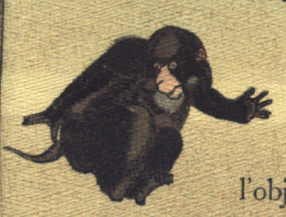

猿。飛び上がって、顔を後ろに向け、逃げようとしている。
著作者：J.Dautremer／出典：親書誌：U426_nichibunken_0107：La meduse simple et naïve／日付：2006／資源識別子：U426_nichibunken_0107_0007_0002
Copyright (c)2010- International Research Center for Japanese Studies, Kyoto, Japan. All rights reserved.